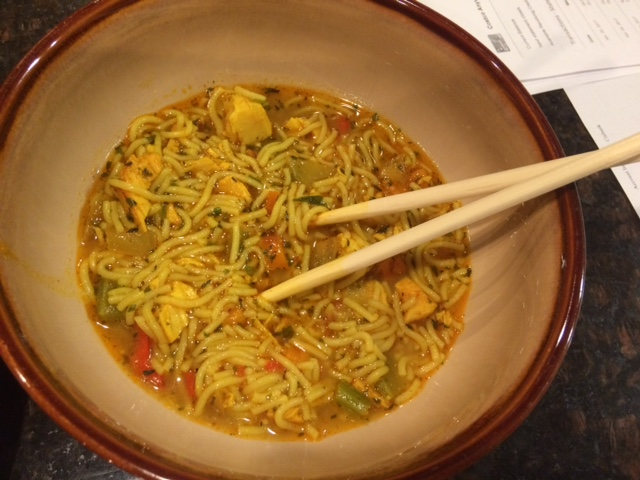

Healthy Food Recipes
Those who are diagnosed with diabetes and have food allergies (such as myself) are limited to the types of foods that they can consume. This website is going to help list the types of food recipes that are eatible to diabetics and people who have foods allergies and are also delicious!
Recipes for Diabetics

Roasted Brussel Sprouts
Ingredients
- 1 1/2 pounds of Organic Brussel Sprouts
- 3/4 teaspoon Garlic Salt
- 1 teaspoon Paprika
- 1 teaspoon Tumeric
- 3 teaspoons of olive oil
Directions
Preheat oven to 400 degrees Farhenheit.
Cut off the ends of the Brussels sprouts and pull off any yellow outer leaves.
Mix them in a bowl with the olive oil, garlic salt, paprika, and tumeric.
Transfer them to a sheet pan and roast for 35 to 40 minutes, until crisp outside and tender inside.
Shake the pan from time to time to brown the Brussels sprouts evenly.
Serve hot.
(Food Network)

Chicken Noodle Soup
Ingredients
- 1 Red Bell Pepper
- 1 Orange Bell Pepper
- 1 Yellow Bell Pepper
- 1/4 of an Yellow Onion
- 1 stalk of Celery